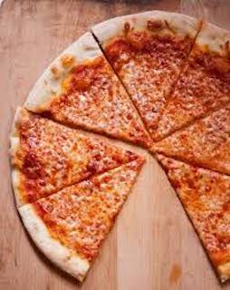
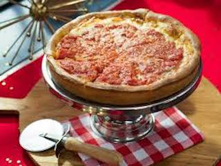
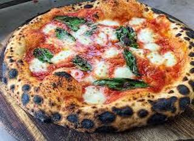
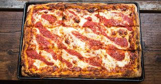

Pizza
New York Style
New York-style pizza is pizza made with a characteristically large hand-tossed thin crust, often sold in wide slices to go. Pizzas are usually 18 to 24 inches in diameter and cut into 8 slices. The crust is thick and crisp only along its edge, yet soft, thin, and pliable enough beneath its toppings to be folded in half to eat. Traditional toppings are simply tomato sauce and shredded mozzarella cheese. This style evolved in the U.S. from the pizza that originated in New York City in the early 1900s, itself derived from the Neapolitan style pizza made in Italy. Today it is the dominant style eaten in the New York Metropolitan Area states of New York, New Jersey, and Connecticut, and variously popular throughout the United States. Regional variations exist throughout the Northeast and elsewhere in the U.S.
Chicago Deep Dish
Deep-dish pizza is baked in an iron skillet or a round, steel pan that is more similar to a cake or pie pan than a typical pizza pan. The pan is oiled in order to allow for easy removal as well as to create a fried effect on the outside of the crust. In addition to ordinary wheat flour, the pizza dough may contain corn meal, semolina, or food coloring, giving the crust a distinctly yellowish tone. The dough is pressed up onto the sides of the pan, forming a bowl for a very thick layer of toppings.
The thick layer of toppings used in deep-dish pizza requires a longer baking time (typically 30-45 minutes), which could burn cheese or other toppings if they were used as the top layer of the pizza. Because of this, the toppings are assembled "upside-down" from their usual order on a pizza. The crust is covered with cheese (generally sliced mozzarella), followed by various meat options such as pepperoni or sausage, the latter of which sometimes is in a solid patty-like layer. Other toppings such as onions, mushrooms, and bell peppers are then also used. An uncooked sauce, typically made from crushed canned tomatoes, is added as the finishing layer; though sometimes, a sprinkling of Parmesan cheese is added for extra flavor. It is typical that when ordered for carry-out or delivery, the pizza is uncut, as this prevents moisture from the sauce and toppings from soaking into the crust, causing the pie to become soggy.
Neapolitan
Neapolitan pizza (Italian: pizza napoletana) also known as Naples-style pizza, is a style of pizza made with tomatoes and mozzarella cheese. It must be made with either San Marzano tomatoes or Pomodorino del Piennolo del Vesuvio, which grow on the volcanic plains to the south of Mount Vesuvius, and Mozzarella di Bufala Campana, a protected designation of origin cheese made with the milk from water buffalo raised in the marshlands of Campania and Lazio in a semi-wild state and “Fior di Latte di Agerola”, a cow milk mozzarella made exclusively in the Agerola comune. Neapolitan pizza is a Traditional Speciality Guaranteed (TSG) product in Europe, and the art of its making is included on UNESCO's list of intangible cultural heritage. This style pizza gave rise to the New York-style pizza that was first made by Italian immigrants to the United States in the early 20th century.
According to the rules proposed by the Associazione Verace Pizza Napoletana, the genuine Neapolitan pizza dough consists of wheat flour (type 0 or 00, or a mixture of both), natural Neapolitan yeast or brewer's yeast, salt and water. For proper results, strong flour with high protein content (as used for bread-making rather than cakes) must be used. The dough must be kneaded by hand or with a low-speed mixer. After the rising process, the dough must be formed by hand without the help of a rolling pin or other machine, and may be no more than 3 millimeters (0.12 in) thick. The pizza must be baked for 60–90 seconds in a 485 °C (905 °F) wood fire oven. When cooked, it should be soft, elastic, tender and fragrant.
Sicilian
Sicilian pizza is pizza prepared in a manner that originated in Sicily, Italy. Sicilian pizza is also known as sfincione or focaccia with toppings. In the United States, the phrase Sicilian pizza is often synonymous with thick-crust pizza derived from the Sicilian sfincione. This type of pizza became a popular dish in western Sicily by the mid-19th century and was the type of pizza usually consumed in Sicily until the 1860s. The version with tomatoes was not available prior to the 17th century. It eventually reached North America in a slightly altered form, with thicker crust and a rectangular shape.
In the United States, "Sicilian pizza" is used to describe a typically square variety of cheese pizza with dough over an inch thick, a crunchy base, and an airy interior. It is derived from the sfinciuni and was introduced in the United States by the first Italian (Sicilian) immigrants. Sicilian-style pizza is popular in Italian-American enclaves throughout the northeastern United States, including Massachusetts, Rhode Island, Michigan, Connecticut, New York, Pennsylvania, and New Jersey.
